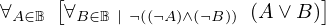
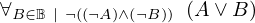
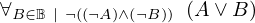
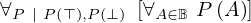
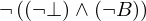

Show the Proof¶
In [1]:
import proveit
# Automation is not needed when only showing a stored proof:
proveit.defaults.automation = False # This will speed things up.
proveit.defaults.inline_pngs = False # Makes files smaller.
%show_proof
Out[1]:
| step type | requirements | statement | ||
|---|---|---|---|---|
| 0 | instantiation | 1, 2, 3 | ⊢  | |
 : , : ,  : : | ||||
| 1 | theorem | ⊢  | ||
| proveit.logic.booleans.forall_over_bool_by_cases | ||||
| 2 | instantiation | 6, 4, 5 | ⊢  | |
 : , : ,  : , : : , :  | ||||
| 3 | instantiation | 6, 7, 8 | ⊢ | |
| : , : , : | ||||
| 4 | deduction | 9 | ⊢  | |
| 5 | deduction | 10 | ⊢ | |
| 6 | theorem | ⊢  | ||
| proveit.logic.booleans.conditioned_forall_over_bool_by_cases | ||||
| 7 | deduction | 11 | ⊢ | |
| 8 | instantiation | 12, 13 | ⊢ | |
| : , : | ||||
| 9 | theorem | ⊢ | ||
| proveit.logic.booleans.disjunction.true_or_true | ||||
| 10 | theorem | ⊢ | ||
| proveit.logic.booleans.disjunction.true_or_false | ||||
| 11 | theorem | ⊢  | ||
| proveit.logic.booleans.disjunction.false_or_true | ||||
| 12 | theorem | ⊢  | ||
| proveit.logic.booleans.implication.falsified_antecedent_implication | ||||
| 13 | instantiation | 14, 15 | ⊢ | |
| : | ||||
| 14 | theorem | ⊢  | ||
| proveit.logic.booleans.negation.double_negation_intro | ||||
| 15 | theorem | ⊢  | ||
| proveit.logic.booleans.negation.not_false | ||||